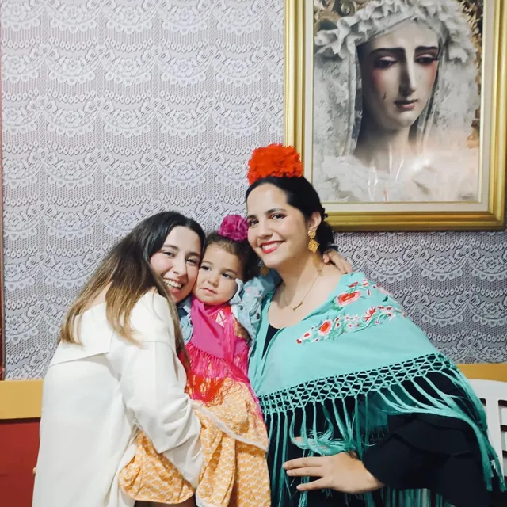
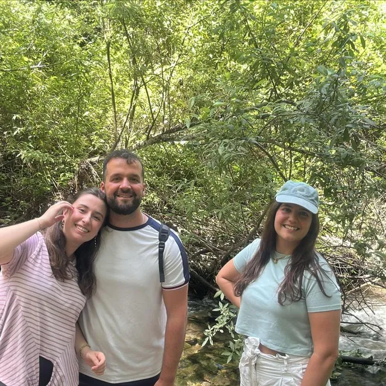
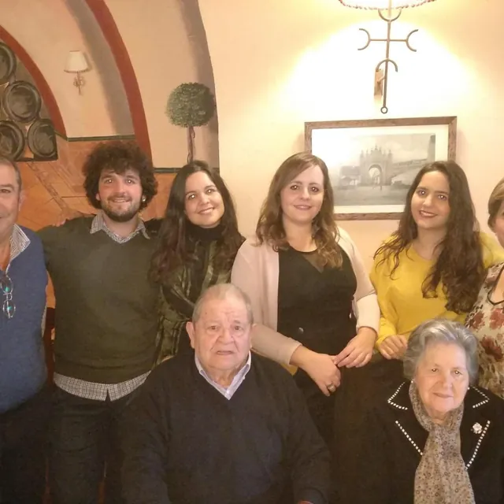
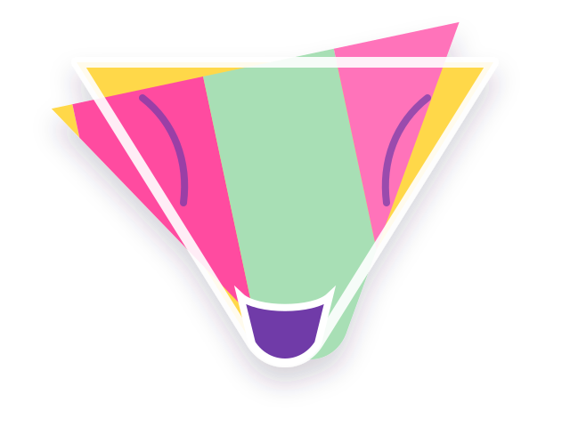
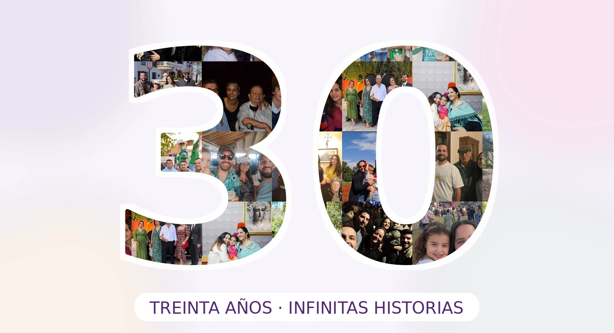

Personas cuidadas
La cuenta dejó de ser viable hace años.
20 · 07 · 2026
Hay personas que hacen florecer todo lo que tocan. Esta aventura reúne un pequeño trozo de todo lo que has sembrado en quienes te queremos.
Desliza, abre, toca y descubre.
Una celebración hecha entre muchas personas
Este jardín está construido con fotografías, palabras, caminos compartidos y mucho cariño. No pretende contar toda tu historia —sería imposible—, sino recordarte algo que a veces se olvida: la cantidad de vida bonita que dejas a tu paso.
Familia, amistades y compañeros de ruta



Una flor por cada año
Abre las flores. Cada una guarda algo que quienes te rodean reconocen en ti.

Agrupación La Ruta de Hércules · Clan Clanthea
Hay quien camina pensando únicamente en llegar. Tú recorres el camino pendiente de que nadie se quede atrás.
Como animadora, responsable y compañera de ruta, has convertido la confianza, la escucha y la alegría en una forma de acompañar. Esta pañoleta no es solo un conjunto de colores: representa campamentos, conversaciones, aprendizajes y personas que han encontrado en ti una referencia.
“Gracias por guiarnos siempre, como animadora, pero sobre todo como persona.”
Datos completamente científicos*
*Verificados por un comité de personas que te quiere muchísimo.
La cuenta dejó de ser viable hace años.
Servicio activo incluso en campamento.
Sube todavía más cuando te ríes.
Y un jardín entero demostrando que tiene sentido.
Quince ventanas a una historia mucho mayor
No están todos los momentos ni todas las personas. Pero en cada fotografía vive algo que merece quedarse.

El jardín está completo
Celia: durante 30 años has llenado de cariño, paz y alegría la vida de quienes te rodean. Hoy queremos recordarte cuánto te queremos y cuánto deseamos seguir compartiendo camino contigo.
Feliz 30 cumpleaños
De parte de todos los que te queremos